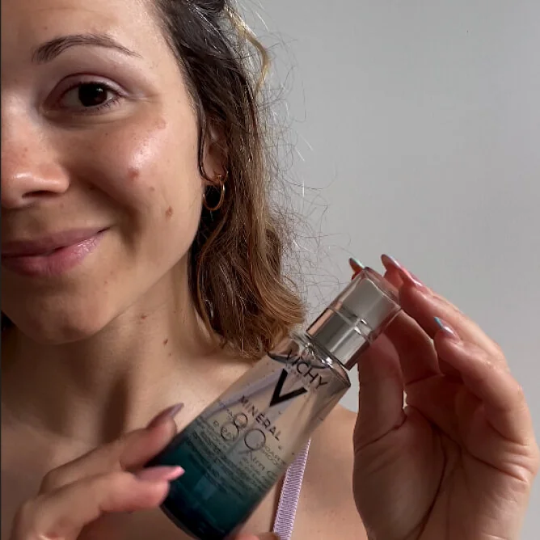

Stratégie
JujuFitCat x Vichy
Le projet
Création d’un partenariat Ambassadrice à l’année avec Jujufitcat.
01 •
Le contexte
La marque souhaitait une prise de parole authentique et continue pour accélérer la notoriété de deux gammes produits « soin » et « cheveux » : le sérum Mineral 89 dont les bénéfices hydratants pour la peau ne sont plus à prouver, et le soin Dercos en tant que solution pour des cheveux plus forts et brillants.

02 •
Notre proposition
Sélection d’un profil légitime pour prendre la parole sur les deux gammes de produits de manière authentique.
Création d’un partenariat ambassadrice en fil rouge et à l’année avec @jujufitcat pour accélérer la visibilité de la marque et ses performances de conversion.
Les résultats.
Au travers de ce dispositif, la marque a pu atteindre son objectif de conversion avec des ventes immédiates générées auprès d’une communauté en parfaite affinité.
Avec un reach qui a surperformé, la marque a pu faire rayonner sa brand awareness.

Le projet suivant